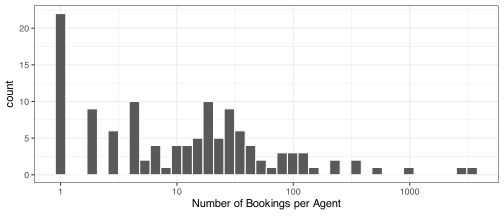
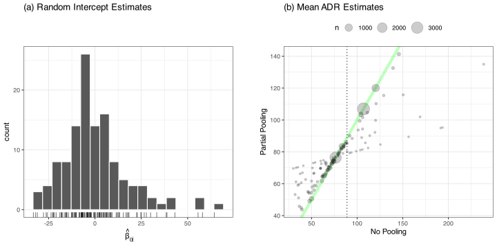
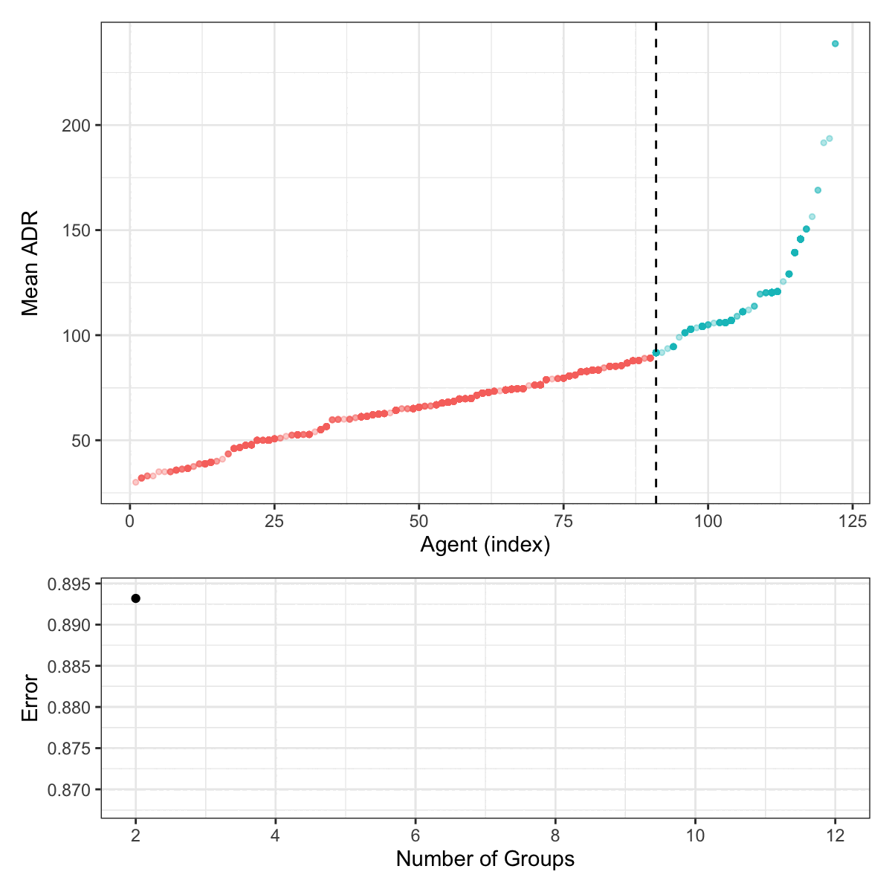
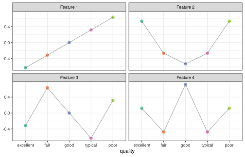

| customer type |
Indicator Columns
|
||
|---|---|---|---|
| group | transient | transient party | |
| contract | 0 | 0 | 0 |
| group | 1 | 0 | 0 |
| transient | 0 | 1 | 0 |
| transient party | 0 | 0 | 1 |
6 Working with Categorical Predictors
This chapter will discuss tools for handling predictor variables that are not measured on a strict numeric scale. For example, the building type and neighborhood variables are qualitative in the Ames housing data. The possible values of qualitative predictors are often called categories or levels (which will be used interchangeably here).
Why would we need to modify this type of predictor? First, most mathematical models require information to be numbers. We’ll need a method to convert qualitative data effectively to some quantitative format. This is an encoding problem; we are finding another representation of our predictor data. There are various tools for converting qualitative data, ranging from simple indicator variables (a.k.a. dummy variables) to more statistically sophisticated tools. These are the focus of this chapter.
Second, there are other circumstances where simplifying or transforming categorical predictors might be advantageous. These are usually related to exceptional situations, such as when there are many possible values (i.e., high cardinality) or infrequently occurring values. Techniques to address these issues are also discussed.
As implied above, some modeling techniques can take the categorical predictors in their natural form. These include tree- or rule-based models, naive Bayes models, and others. In this book’s third and fourth parts, we’ll discuss how certain models naturally handle categorical variables in their respective sections.
To begin, the primary data set used in this chapter is introduced.
6.1 Example Data: Daily Hotel Rates
Antonio, de Almeida, and Nunes (2019) describe a data set with booking records from two Portuguese hotels. There are numerous variables in the data related to the
- Reservation: room type, date, meal plan, etc.,
- Booking method: agent, distribution channel, etc.,
- Customer: type, number of children staying, country of origin, etc.
In addition, there are several qualitative variables: customer type, market segment, room type, etc.
We’ll analyze these data in various ways (especially in ?sec-reg-linear to ?sec-reg-summary where they are used as a case study). Our goal is to predict the average daily rate (ADR, i.e., the average cost in euros) from one of the two hotels in the original data.
There were 15,402 bookings for the resort hotel. An initial two-way split was used:
- The training set contains 11,551 (75%) bookings whose arrivals are between 2016-07-02 and 2017-05-15.
- The remaining 25% were used as the test set with 3,851 bookings (between 2017-05-15 to 2017-08-31).
This chapter will use these data to demonstrate how qualitative data, such as the booking agent’s name or company, can be converted into quantitative information that many models require.
6.2 Simple Indicator Variables
As a simple example, consider the customer type predictor with categories: “contract”, “group”, “transient”, and “transient (party)”. What would we do if a model required these data to be numeric? There is no natural ordering to these values, so giving the models integer values (e.g., contract = 1.0, group = 2.0, etc.) would be erroneous since that implies a scale for these values. Instead, it is common to create multiple binary columns (numeric with zeros or ones) representing the occurrence of specific values. These are called indicator columns or sometimes dummy variables.
Table 6.1 shows how this works for the customer type. The rows depict the possible values in the data, while the columns are the resulting features used in place of the original column. This table uses the most common indicator encoding method called reference cell parameterization (also called a treatment contrast). First, a category is chosen as the reference value. In Table 6.1, the first alpha-numeric value is used ("contract"), but this is an arbitrary choice. After this, we create separate columns for all possible values except for the reference value. Each of these columns has a value of one when the data matches the column for that value (and is zero otherwise).
The rationale for excluding one column is that you can infer the reference value if you know the values of all of the existing indicator columns1. Including all possible indicator columns embeds a redundancy in the data. As we will see shortly, data that contain this type of redundancy pose problems for some models like linear regression.
Before moving on, let’s examine how indicator columns shown in Table 6.1 affect an example data analysis. Suppose that we are modeling a numeric outcome using a linear regression model (discussed in ?sec-reg-linear) of the form:
\[ y_i = \beta_0 + \beta_1x_{i1} + \ldots + \beta_4x_{i4} + \epsilon_i \tag{6.1}\]
where the \(\beta\) values are the parameters to be estimated and, in this application, the \(x_{ij}\) are the indicator columns shown in Table 6.1. The intercept term (\(\beta_0\)) corresponds to a column of all ones. It is almost always the case that we include the intercept term in the model.
Table 6.2 shows the encoding in Table 6.1 and adds columns for a numeric outcome and the intercept term. The outcome column shows the average daily rate (in €). Using a standard estimation procedure (called ordinary least squares), the bottom row of Table 6.2 shows the 4 parameter estimates. Since all of the indicators for the contract customer row are zero, the intercept column estimates the mean value for that level (\(\widehat{\beta}_0\) = 73). The variable \(x_{i1}\) only has an indicator for the “group” customers. Hence, its estimate corresponds to the difference in the average group outcome values (63.8) minus the effect of the reference cell: 73 - 63.8. From this, the resulting estimate (\(\widehat{\beta}_1\) = -9.23) is the effect of the group customers above and beyond the impact of the contract customers. The parameter estimates for the other possible values follow analogous interpretations.
| ADR |
Model Terms
|
||||
|---|---|---|---|---|---|
| (Intercept) | group | transient | transient_party | ||
| contract | 73.0 | 1 | 0 | 0 | 0 |
| group | 63.8 | 1 | 1 | 0 | 0 |
| transient | 94.6 | 1 | 0 | 1 | 0 |
| transient party | 76.4 | 1 | 0 | 0 | 1 |
| estimate (€): | 73.0 | -9.2 | 21.6 | 3.4 | |
Another popular method for making indicator variables is called one-hot encoding (also known as a cell means encoding). This technique, shown in Table 6.3, makes indicators for all possible levels of the predictor and does not show an intercept column (for reasons described shortly). In this model parameterization, indicators are specific to each value in the data, and the linear regression estimates are the average response values for each customer type.
| ADR |
Model Terms
|
||||
|---|---|---|---|---|---|
| contract | group | transient | transient_party | ||
| contract | 73.0 | 1 | 0 | 0 | 0 |
| group | 63.8 | 0 | 1 | 0 | 0 |
| transient | 94.6 | 0 | 0 | 1 | 0 |
| transient party | 76.4 | 0 | 0 | 0 | 1 |
| estimate (€): | 73.0 | 63.8 | 94.6 | 76.4 | |
One-hot encodings are often used in nonlinear models, especially in neural networks and tree-based models. Indicators are not generally required for the latter but can be used2.
One issue with creating indicator variables from categorical predictors is the potential for linear dependencies. This occurs when two or more sets of predictors have a mathematically linear relationship with one another. For example, suppose that each agent only worked with a single customer type. If we were to create indicator variables for the agent names and the customer type, there would be a redundancy: if we know the agent, we know the customer type. Mathematically, the row-wise sum of the agent name indicators would equal the row-wise sum of the position indicators. For some types of predictive models, including linear or logistic regression, the linear dependencies would cause the mathematical estimation of the model parameters to fail.
An example of this is the one-hot encoding method shown in Table 6.3. If we were to include an intercept term with a one-hot encoding, the row-wise sum of the indicator columns equals the intercept column. The implication is that one of the model terms is not “estimable.” For this reason, this encoding method is mainly used with models that do not use specific linear algebra operations (e.g., matrix inversion) to estimate parameters. Some tools can identify linear combinations (Elswick et al. 1991), and from this information, the smallest possible set of columns can be found to delete and thereby eliminate the linear dependencies.
Note that linear dependencies are exact linear relationships between predictors. There are other circumstances where two or more predictors are highly correlated but not perfectly related. This situation, called multicollinearity, is discussed throughout the book but mostly in ?sec-colinearity. Multicollinearity can be a problem for many models and needs to be resolved prior to modeling.
In addition to reference cell and one-hot encodings, there are various tools for creating indicator columns. Some, called contrast methods, are associated with more niche strategies, and many produce fractional values instead of binary indicators. For example, Helmert contrasts (Ruberg 1989) are configured so that each category is compared to the average of the preceding categories. No encoding method is uniformly better than the others; the choice is often driven by how the user will interpret the parameter estimates.
The situation becomes slightly more complex when a model contains multiple categorical predictors. The reference value combines levels across predictors for reference value parameterizations. For example, if a model included the customer’s country of residence, the reference would include that factor. Suppose Canadians were the reference nationality. Then the overall reference cell would be Canadian contract customers.
Note that these encoding techniques are basically look-up tables that map individual categories known in the training set to specific numeric values. As discussed in the next section, mapping categories can be problematic when novel values are seen in new data (such as the test set).
6.3 Novel Categories
When creating indicator variables, there is the assumption that the categories in the training data reflect all possible categories. This may not be the case. For example, the agents observed in our data are not the only agents that will be booking rooms in the future. After we create a model with a specific set of agents, what happens when we predict future data that involves new agents?
One approach we could take is to prospectively create a new value for the predictor (let’s give it a value of "new"). When a future sample has an agent that was not in the original data, we could assign this sample to the general category so that the model can anticipate this new level. In general, this won’t help since the model estimation process will never have any “new” values on hand when the model is fit. For some models, this is innocuous and has no real harm (but offers no benefit either).
Let’s revisit linear regression results from the reference cell parameterization again. Suppose there is a new customer type of “influencer.” Our reference cell encoding method could add an indicator column for that customer type, but since no influencers currently exist in the training data, it will be a column filled with zeros. We can call this a zero-variance predictor since it has a single unique value. It is entirely non-informative. For linear regression, this column of zeros creates a linear dependency with the intercept column because all rows have the same numeric value. Most regression software would detect zero-variance columns and remove them before the model is fit.
Since there would be no influencer column in the data, all of the indicator columns would be zero when an influencer was observed in new data being predicted. However, from Table 6.2 we know that such a pattern would map to the reference level (which is the "contract" customer in our data). The new levels would be mapped to the reference level for this parameterization. This would occur more by happenstance and would not be a deliberate strategy.
Traditional indicator encoding methods should be avoided if new predictor categories are anticipated. Instead, the techniques used in the next section (effect encodings or feature hashing) will likely be more effective at dealing with this situation.
6.4 Predictors with Many Values
Some predictors have high cardinality; they can take many possible values relative to the number of data points. For example, in the entirety of the hotel rate data, there are 122 unique agents (see Figure 6.1). Should we create so many indicator variables for this predictor? In the data, 49 agents had fewer than six bookings. This means there will be many sparse columns with almost all zero entries. Additionally, 71 of the agents have no data in the training set; they only occur in the test set. Their indicator columns would contain all zeros.

This section will consider several methods for effectively representing high cardinality predictors. The first two techniques are unsupervised (i.e., they do not use the outcome), while the others are supervised. Cerda and Varoquaux (2022) surveys different methods for dealing with these types of predictors.
6.4.1 “Othering”
It is possible to isolate infrequently occurring categories into a new “other” category. For example, there are 49 agents with fewer bookings than 0.05% of the training set. It may make sense to group these agents into their own categories as long as the predictive ability of the variable is maintained. There is no magic number for the training set frequency cutoff that decides which categories to pool. This pre-processing value requires optimization since each data set will have its own nuances with infrequent categories.
6.4.2 Feature Hashing
Feature hashing (Weinberger et al. 2009) is a technique where the user specifies how many indicator columns should be used to represent the data. Using cryptographic principles, an algorithm assigns each row to an indicator column. This assignment only uses the value of the category in the calculations and, unlike the traditional methods discussed in Section 6.2, does not require a dictionary that maps pre-defined categories to indicator columns.
Suppose our agent column had a value of "nobody owens". The algorithm translates this value to a fixed-length string using a hash function. Hash functions are designed to be non-random and, effectively, irreversible. Once the original value is converted to the hash value, it is very difficult to reverse engineer. Also, the frequency distributions of the hash values are designed to appear uniform in distribution, as seen below.
The hashed value of the predictor’s level can be converted to an integer, and, using modular arithmetic, the integer is mapped to a feature column. Suppose that we create 256 hashing features and nobody owens maps to an integer of 123,456. To assign this agent to one of 256 feature columns, we compute 123456 mod 256 = 64. For this row of data, we put a value of one in column 64.
Presumably, the number of possible categories is larger than the number of indicator columns we request. This means multiple predictor values will map to the same feature column. In cryptography, this is called a collision, the same as aliasing in statistical experimental design (Box, Hunter, and Hunter 1978). There is a trade-off between the number of feature columns and the number of collisions. As the number of columns increases, the probability of collisions decreases. However, the time required to train a model increases as the number of columns increases. Also, it is entirely possible that there are predictor columns where no corresponding categories, yielding all zeros.
To reduce collisions, the hashing function can produce integers that can be both positive and negative. When assigning the integer to a feature column, we can assign a value of -1 when the hashed integer value is negative. In this way, columns can have values of -1, 0, or 1. This means fewer collisions.
Table 6.4 shows the results for several agents3 when ten signed feature hash columns are requested. The last row of the table shows the rate of non-zero values in each column. The average density is close to 10%, demonstrating that the hash function produces frequencies that emulate a uniform distribution.
| Agent |
Features from Hashing
|
|||||||||
|---|---|---|---|---|---|---|---|---|---|---|
| 01 | 02 | 03 | 04 | 05 | 06 | 07 | 08 | 09 | 10 | |
| Aaron Marquez | 0 | 0 | 0 | 0 | 0 | 0 | 0 | 0 | 0 | -1 |
| Alexander Drake | 0 | 0 | 0 | 0 | 0 | 0 | 0 | -1 | 0 | 0 |
| Allen Her | 0 | 0 | 0 | 0 | 0 | 0 | 0 | 0 | -1 | 0 |
| Anas El Bashir | 0 | 0 | 0 | 0 | -1 | 0 | 0 | 0 | 0 | 0 |
| : | : | : | : | : | : | : | : | : | : | : |
| Ya Eesh El Sadiq | 0 | -1 | 0 | 0 | 0 | 0 | 0 | 0 | 0 | 0 |
| Yoonus Al Sultana | 0 | 0 | 0 | 0 | 1 | 0 | 0 | 0 | 0 | 0 |
| Youjia Tsuchiya | 1 | 0 | 0 | 0 | 0 | 0 | 0 | 0 | 0 | 0 |
| Zachary Leedholm | 0 | -1 | 0 | 0 | 0 | 0 | 0 | 0 | 0 | 0 |
| Density (%) | 10.7 | 13.1 | 7.4 | 13.1 | 7.4 | 6.6 | 9.8 | 10.7 | 9.8 | 11.5 |
The main downside of this method is that the use of hash values makes it impossible to explain the model. If the tenth feature column is critical, we can’t explain why this is the case for new data (since the hash function is practically non-reversible and may include collisions). This may be fine if the primary objective is prediction rather than interpretation. When the goal is to optimize predictive performance, then the number of hashing columns to use can be included as a tuning parameter. The model tuning process can then determine an optimal value of the number of hashing columns.
One unanticipated side effect of using feature hashing is that it might remove linear dependencies with other columns. This is because hashing distributes the predictor levels to hashing columns roughly uniformly. There is a high probability that this eliminates any existing relationship between other predictor values.
6.4.3 Effect Encodings
We can also use a different supervised tool called effect encoding4 (Micci-Barreca 2001; Pargent et al. 2022). Recall the discussion of one-hot encodings for indicator variables. Table 6.3 showed that the model terms for such an encoding estimate the cell means for each category (when the outcome is numeric). For example, the effect on the outcome for contract customers in that table was 73€.
Effect encodings use a simple, separate model to estimate the effect of each predictor category on the outcome and then use that value in place of the original data. For the example in Table 6.3, the rows corresponding to the group customers would be replaced with 63.8, transient customers with 94.6, and so on. Instead of making multiple binary columns out of the categorical predictor, a single numeric column would take its place.
This may seem somewhat problematic though; we are using the training data to estimate the effect of a predictor, putting the resulting effects back into the data, and using our primary model to (re)estimate the effect of the predictor. Since the same data are used, is this a circular argument? Also, there should be a worry about data quality. As previously mentioned, the number of bookings per agent can vary greatly. For example:
Agent Chelsea Wilson had a single booking with an associated ADR of 193.6€. Using this single data point as the effect estimate is unsatisfactory since we suspect that the estimated ADR would not stay the same if the number of total bookings were larger5.
Agent Alexander Drake had 967 bookings with a simple mean ADR estimate of 120.3€. We would judge the quality of this agent’s data to be better than cases with a handful of bookings.
How well can we estimate an effect if there are only one or two bookings for an agent in the data set?
Both of these concerns can be addressed by how we estimate the effect of the predictor. Recall that Table 6.3 showed how simple linear regression was used to calculate the mean for each customer type. The way that the indicator variables impact the parameter estimates is such that the rows for each customer type are the only data used to estimate that customer type’s effect. For example, the contract data do not directly affect the parameter estimate for the transient customers, and so on. This is often called a no pooling method of estimating parameters. In this context, “pooling” means combining data across multiple categories to estimate parameters.
We could compute the naive ADR estimate using sample means and produce a similar table. However, we can create better mean estimates for each agent by considering the data from all agents using a technique called partial pooling (Gelman et al. 2013; Johnson, Ott, and Dogucu 2022, chap. 15).
In the following two sub-sections, we’ll describe this technique in detail for cases where the outcome is a numeric value assumed to be normally distributed or or non-Gaussian. These sections will rely more on probability theory and statistical details than most others.
Numeric outcomes
For our ADR analysis, the outcome is a quantitative value. A linear regression model (see ?sec-linear-regression) is the most commonly used approach to model this type of outcome. Linear regression models the outcome as a function of a slope and intercept model. For our example, where we only consider estimating the effect of the agents using indicator columns, the model is:
\[ y_{ij} =\beta_0 + \beta_1x_{i1} + \ldots + \beta_{121}x_{i 121} + \epsilon_{ij} = \mu_i + \epsilon_{ij} \]
where \(y_{ij}\) is the outcome (in this case, the ADR of booking \(i\) by agent \(j\)), \(x_{ij}\) is an indicator for reservation \(i\) from agent \(j\), \(\beta_0\) is the estimated outcome of the reference cell, and we assume \(\epsilon_i \sim N(0, \sigma^2_\epsilon)\). This leads to the assumption that \(y_{ij} \sim N(\mu_i, \sigma^2_\epsilon)\). The \(\hat{\beta}_{j}\) parameters are the effect of the agents above and beyond the reference cell effect. The index \(j\) is from 1 to 121 since there were 122 agents in the training set with at least one booking.
Again, this approach is called no pooling since it only uses each agent’s data to estimate their effect. It treats the agent as a known set of values and cannot generalize to agents outside of those in the training set6.
Partial pooling takes the viewpoint that the agents in the training set are a sample of a population of agents. From this, we might posit a probability distribution should be assigned to the agent-to-agent effects. Since the range of the \(\beta\) parameters is the real line, we might propose a random intercept model:
\[ y_{ij} = { \color{darkseagreen} \underbrace{\color{black} (\beta_0 + \beta_{0j})}_{\text{intercept(s)}} } + \epsilon_{ij} = \mu_j + \epsilon_{ij} \tag{6.2}\]
where the \(\beta_{0j}\) are per-agent differences from the population effect (\(\beta_{0}\)) (\(j = 1 \ldots 122\) this time). Note that the model has no \(x_{ij}\) terms. This is simply a notation difference between the models since most methods that estimate this model do not treat that variable as a traditional regression covariate.
Several techniques can fit this model. For a linear mixed model approach to fitting a random intercept model (Laird and Ware 1982; Demidenko 2013), we assume that the model parameters have normal distributions with \(\beta_{0} \sim N(\beta, \sigma^2)\) and \(\beta_{0j} \sim N(0, \sigma_0^2)\) and that residuals (\(\epsilon_{ij}\)) follow a Gaussian distribution. When used in Bayesian analysis, such distributions on parameters are referred to as prior distributions. We’ll stick with this terminology for Bayesian and non-Bayesian techniques. There are many strategies for estimating this model type, including maximum likelihood, restricted maximum likelihood, or Bayesian methods. See Stroup (2012) or Gelman et al. (2013) for more specifics.
However, we might gain some intuition if we pause and consider a less complex version of this model. For simplicity, we’ll also make the completely unrealistic assumptions that all agents had the same number of bookings (\(n_j = n\)) and that we know that \(\sigma^2_\epsilon = 1\). From this, we can also say that sample means of the outcome data for each category are also normal with \(\bar{y}_{j} \sim N(\mu_i, 1/n)\). These assumptions greatly simplify the math required to produce a formula for the estimates of the per-category means:
\[ \hat{y}_j = \mu_0 + (\bar{y}_j - \mu_0) \frac{\sigma^2_0}{\frac{1}{n} + \sigma^2_0} \tag{6.3}\]
There are a few aspects of this equation7 to note. First, the effect for a specific category is estimated by a combination of the sample mean for each category (\(\bar{y}_j\)) as well as our prior mean (\(\mu_0\)). The difference demonstrates the possible shrinkage towards the prior mean.
Also, the shrinkage coefficient depends on \(\sigma^2_0\) and the amount of data in the category. Suppose we choose a non-informative prior by making it extremely wide8 via \(\sigma^2_0 = 100\). No matter how much data are observed in the category, the fraction will be close to 1, and our partial pooling estimate is essentially \(\bar{y}_j\). If we had a highly opinionated prior9, \(\sigma^2_0 = 1\), the weighting factor becomes \(n / (n + 1)\). For \(n = 1\), the partial pooling estimate has an even share of the sample mean and the prior mean. The effect of the prior mean decreases as \(n\) increases.
These example computations assumed that each category has the same number of rows in the training set (i.e., \(n_j = n\)). In practice, this is unrealistic. However, the insights into how the sample size changes the amount of shrinkage demonstrate the previous idea of how “poor data” can affect the estimates with partial pooling.
While Equation 6.3 helps illustrate how partial pooling works, we should understand that the specific results hinge on knowing \(\sigma^2_\epsilon = 1\). We would seldom make such a critical assumption in practice.
We’ll use the non-Bayesian mixed model approach to estimate effects for our data since it is more computationally efficient. Using the training set data, maximum likelihood estimation produced \(\hat{\beta}_0\) = 76.9. Figure 6.2(a) shows the distribution of the 122 random intercept estimates \(\hat{\beta}_{0j}\). The estimated standard deviation of this distribution was \(\hat{\sigma_0}\) = 22.9€. Even though we assume that the prior distribution of the individual effects was symmetric, the histogram of the estimates shows a lack of symmetry. This may be due to a few outliers or indicate that our prior should not be symmetric.

The benefit of using this model, called a hierarchical model, is that it views the per-agent effects as a collection of values from a distribution. The mathematical consequence of this formulation is that the resulting parameter estimates use the data from all agents to estimate each agent’s estimates (hence the use of the phrase “partial pooling”). The intuition for that statistical method applies here: the estimates for agents with “poor data quality” have their results shrunken towards the overall population mean across all agents. Agents with “better” data are shrunken less during estimation. What does “poor data quality” mean? It primarily means high variance, which is usually a function of sample size and some baseline, the irreducible noise level in the system.
Recall the previous discussion regarding agents Chelsea Wilson and Alexander Drake. Using the partial pooling approach:
Agent Chelsea Wilson: partial pooling shrinks the single value (193.6€) back towards the estimated population mean (76.9€) to produce a more modest estimated effect of 95.3€. Because there is a single value for this agent, the prior distribution greatly influences the final estimate.
Agent Alexander Drake: partial pooling only slightly adjusts the original sample mean (120.3€) to the final estimate (120.1€) since there are more data available. The prior has almost no influence on this estimate since the agent had 967 bookings in the training set.
The amount of shrinkage was driven mainly by the number of bookings per agent. Figure 6.2(b) shows the collection of effect estimates for each unique data pattern in the training set. The dotted line indicates the overall ADR sample mean, and the size of the points indicates the total number of bookings by an agent. The distribution of the shrunken effects (y-axis) is significantly attenuated compared to the no pooling effects estimates (x-axis). However, note that the points with large numbers of bookings line up along the diagonal green line (i.e., minimal shrinkage to the center); regardless of the value of their agent-specific ADR estimate (\(\bar{y}_j\)).
To reiterate how these values are used for pre-processing this type of predictor, Table 6.5 shows the linear mixed model analysis results. The numeric column is our primary model’s data for representing the agent names. This avoids creating a large number of indicator variables for this predictor.
| Agent | Effect Estimate (€) |
|---|---|
| Aaron Marquez | 92.2 |
| Alexander Drake | 120.1 |
| Allen Her | 73.7 |
| : | : |
| Yoonus Al Sultana | 58.8 |
| Youjia Tsuchiya | 74.8 |
| Zachary Leedholm | 85.6 |
As an alternative to generalized linear mixed models to estimate the effects, a more general approach uses Bayesian analysis (Kruschke 2014; McElreath 2015). Here, we give all of the model parameters prior probability distributions, which reflect our prior knowledge of the parameters’ shape and range. “Priors” can be pretty vague or highly opinionated, depending on what we feel we know about the situation10. For example, to continue with the random intercept formulation, we might specify the following:
\[\begin{align} \beta_0 &\sim N(0, \sigma_0^2) \notag \\ \beta_{0j} &\sim t(2) \notag \\ \sigma_0 &\sim U(0, \infty) \end{align}\]
The uniform prior in the standard deviation is incredibly vague and is considered a non-informative prior. Conversely, the t distribution (with two degrees of freedom) for the random effects reflects that we might expect that the distribution is symmetric but has heavy tails (e.g., potential outliers such as those seen in Figure 6.2(a)). Priors can be vague or highly opinionated.
When estimating the Bayesian model, the prior distributions are combined with the observed data to produce a posterior distribution for each parameter. Like the previous mixed-model technique, the posterior mimics the prior when there is very little (or noisy) data. The posterior distribution favors the observed results when high-quality data are abundant. Using Bayesian methods to estimate the effects enables much more versatility in specifying the model but is often more computationally intensive.
Non-Guassian outcomes
In many of these cases, effect encodings can be computed using Bayesian methods or via the generalized linear mixed model approach (Bolker et al. 2009; Stroup 2012) approach fitting a random intercept model.
The latter model has a similar right-hand side as Equation 6.2. For example, when the outcome (\(y_{ij}\)) is a count, the standard Poisson model would be
\[ \log(\mu_{ij}) = \beta_0 + \beta_{0j} \] where \(\mu_{ij}\) is the theoretical effect in the original units.
Suppose the data are binomial proportions or Bernoulli (i.e., binary 0/1 values). The canonical effects model is:
\[ \log\left(\frac{\pi_{ij}}{1-\pi_{ij}}\right) = \beta_0 + \beta_{0j} \] with \(\pi_{ij}\) being the parameter value for the effects. This is a basic logistic regression formulation of the problem.
Similar Bayesian approaches can be used. However, a completely different technique for binary outcomes is to assume again that the original data are binomial with rate parameter \(\pi\) but, instead of the logistic regression formulation, assume that the actual rates come from a Beta distribution with parameters \(\alpha\) and \(\gamma\). With the Beta distribution as the prior, users can specify distributions with different shapes, such as uniform, bell-shaped, or “U” shaped, depending on the values chosen for \(\alpha\) and \(\gamma\). See Chapter 3 of Johnson, Ott, and Dogucu (2022). The Bayesian approach can be very flexible.
Consequences of using effect encodings
As with feature hashing, effect encoding methods can naturally handle novel categories in future data. Without knowing anything about the new category, the most logical choice for this method is to assign the overall population effect (e.g., the mode of the posterior distribution) as the value.
As with feature hashing, effect encodings can eliminate linear dependencies between sets of indicators. Since the categorical data are being replaced with numeric summaries of the outcome data, it may be likely that there is no longer a redundancy in the data. Indicator columns reflect the identities of the predictor categories, while the effect encoding column measures the effectiveness of the categories. For example, a hypothetical scenario was mentioned where the agent was aliased with the customer type, yielding a linear dependency. Once the agent name column is converted to effect estimates, there would no longer be a relationship between the two predictors.
Lastly, applying effect encodings requires a robust data usage strategy. The risk of embedding over-fitted statistics into the model could cause problems that may not be observed until a new data set is predicted (see Chapter 9). Using resampling methods or a validation set (Chapter 10) is critical for using this tool. Also, when there is a temporal aspect to the data, we should try to ensure that historical data are not being predicted with future data (i.e., information leakage). For example, when an agent has multiple bookings, we kept the oldest data for an agent in the training set and newer bookings in the test set. Simple random sampling may result in the opposite occurring.
6.4.4 Supervised Combining of Categories
Another approach for dealing with predictors with large numbers of categories is to collapse them into smaller groups that similarly affect the outcome data. For example, a cluster of agents may have similar performance characteristics (i.e., mean ADRs). If we can derive clusters of categories from the training set, a smaller group of cluster-level indicators might be a better approach than many indicator columns.
This approach closely mirrors the splitting process in tree-based models (discussed in Sections ?sec-cart-cls and ?sec-cart-reg), and we can use these models to find suitable groupings of predictor values. In summary, the categories are ordered by their estimated effects and then partitioned into two groups by optimizing some performance measures. For classification models, this is usually a measure of the purity of the classes in the resulting partition11. A measure of error is used for numeric outcomes, such as RMSE. Once the initial partition is made, the process repeats recursively within each division until no more splits can be made, perhaps due to insufficient data.
For the agent data, Figure 6.3 shows this process. The 122 agent are categorized into 12 groups. The top panel shows the ordered mean ADR values for each agent. The vertical lines indicate how the different agents are grouped at each step of the splitting process. The bottom panel shows a scaled estimate of the RMSE that uses the group-level mean ADR to predict the individual outcome results.

For these data, there is no rational grouping or clustering of the agents (regarding their ADR) for the tree-based model to discover. The process produces increasingly granular groups, and the stopping point is somewhat arbitrary. For these reasons, it is probably not the best approach for this predictor in this particular data set.
6.5 Encodings for Ordinal Predictors
In some cases, a categorical predictor will have levels with an inherent order. For example, in the Ames data, some house amenities were ranked in terms of quality with values ‘excellent’, ‘fair’, ‘good’, ‘typical’, and ‘poor’. These values do not imply a specific numerical translation (e.g., ‘excellent’ = 2 times ‘poor’). For this reason, there are different options for converting them to numeric features.
First, the analysis could treat them as unordered categories and allow the model to try to determine how the values relate to the outcome. For example, if there is the belief that, as the quality of the heating system improves, the house price should increase. Using unordered categories would be agnostic to this assumption and the model would estimate whatever trend it saw in the data. This approach would essentially be treating the quality variable as a categorical variable with 5 levels.
Another choice is to use domain-specific knowledge to imply relationships between levels. For example, the quality values could be replaced with integers one through five. This does bake the assumed relationship into the features, and that is advantageous when the assumed pattern is correct.
There are also contrast methods, similar to the one discussed in Section 6.2, that can automatically create potential patterns using polynomial expansions (more on these in Section 8.2). For our quality example, there are five possible levels. Mathematically, we can create up to the number of unique levels (minus one) polynomial function. In this example, linear, quadratic, cubic, and quartic (\(x^4\)) polynomial functions can be used. Figure 6.4 shows these patterns using orthogonal polynomial values12.

In many applications, higher-degree polynomials (> 2) are unlikely to be effective predictors. For example, the cubic pattern in Figure 6.4 (“Feature 3”) implies that houses in Ames with ‘excellent’ quality heating systems would have lower sale prices than those with ‘fair’ or ‘poor’ systems. Utilizing higher order polynomials usually requires some specific knowledge about the problem at hand.
Chapter References
Antonio, N, A de Almeida, and L Nunes. 2019. “Hotel Booking Demand Datasets.” Data in Brief 22: 41–49.
Bolker, B, M Brooks, C Clark, S Geange, J Poulsen, H Stevens, and JS White. 2009. “Generalized Linear Mixed Models: A Practical Guide for Ecology and Evolution.” Trends in Ecology and Evolution 24 (3): 127–35.
Box, GEP, W Hunter, and J. Hunter. 1978. Statistics for Experimenters. New York: Wiley.
Cerda, P, and G Varoquaux. 2022. “Encoding High-Cardinality String Categorical Variables.” IEEE Transactions on Knowledge and Data Engineering 34 (3): 1164–76.
Demidenko, E. 2013. Mixed Models: Theory and Applications with R. John Wiley & Sons.
Efron, B, and T Hastie. 2016. Computer Age Statistical Inference. Cambridge University Press.
Elswick, RK, C Gennings, V Chinchilli, and K Dawson. 1991. “A Simple Approach for Finding Estimable Functions in Linear Models.” The American Statistician 45 (1): 51–53.
Gelman, A, J Carlin, H Stern, and D Rubin. 2013. Bayesian Data Analysis. Chapman; Hall/CRC.
Johnson, A, M Ott, and M Dogucu. 2022. Bayes Rules!: An Introduction to Applied Bayesian Modeling. Chapman; Hall/CRC.
Kruschke, J. 2014. Doing Bayesian Data Analysis: A Tutorial with R, JAGS, and Stan. Academic Press.
Laird, N, and J Ware. 1982. “Random-Effects Models for Longitudinal Data.” Biometrics, 963–74.
McElreath, R. 2015. Statistical Rethinking: A Bayesian Course with Examples in R and Stan. Chapman; Hall/CRC.
Micci-Barreca, D. 2001. “A Preprocessing Scheme for High-Cardinality Categorical Attributes in Classification and Prediction Problems.” ACM SIGKDD Explorations Newsletter 3 (1): 27–32.
Pargent, F, F Pfisterer, J Thomas, and B Bischl. 2022. “Regularized Target Encoding Outperforms Traditional Methods in Supervised Machine Learning with High Cardinality Features.” Computational Statistics, 1–22.
Ruberg, S. 1989. “Contrasts for Identifying the Minimum Effective Dose.” Journal of the American Statistical Association 84 (407): 816–22.
Stroup, W. 2012. Generalized Linear Mixed Models: Modern Concepts, Methods and Applications. CRC press.
Weinberger, K, A Dasgupta, J Langford, A Smola, and J Attenberg. 2009. “Feature Hashing for Large Scale Multitask Learning.” In Proceedings of the 26th Annual International Conference on Machine Learning, 1113–20. ACM.
In other words, we know that the vector of indicators (0, 0, 0) must represent the contract customers.↩︎
This is discussed in greater detail for one of the case studies in ?sec-reg-summary.↩︎
The original data uses codes to anonymize the agent names. The names shown here are randomly fabricated. The same is true of the company names.↩︎
Also called target encoding or likelihood encoding.↩︎
This demonstrates the concept of overfitting, discussed in Chapter 9 and subsequent chapters.↩︎
In the language of mixed effects models, the agent is a fixed effect in this parameterization.↩︎
Equation 6.3 is related to the well-known James-Stein estimator (Efron and Hastie 2016, chap. 7).↩︎
Making the range of the prior exceedingly wide indicates that almost any value is possible.↩︎
In other words, a very narrow distribution. There are other ways to create opinionated priors though. For instance, a skewed prior distribution for one of the \(\beta\) regression slopes would be considered opinionated.↩︎
The linear mixed model approach mentioned above is often considered as an empirical Bayes approach with more restrictive options for the prior distributions. For empirical Bayes, one might say that you make your priors for your regression parameters any distribution you want, as long as they are Gaussians.↩︎
The notion of “purity” can mean a very tight distribution of numerical data (for regression models) or when the frequency distribution of qualitative has a very high probability for one category.↩︎
These features have characteristics that their values sum to zero and there is zero correlation between features.↩︎